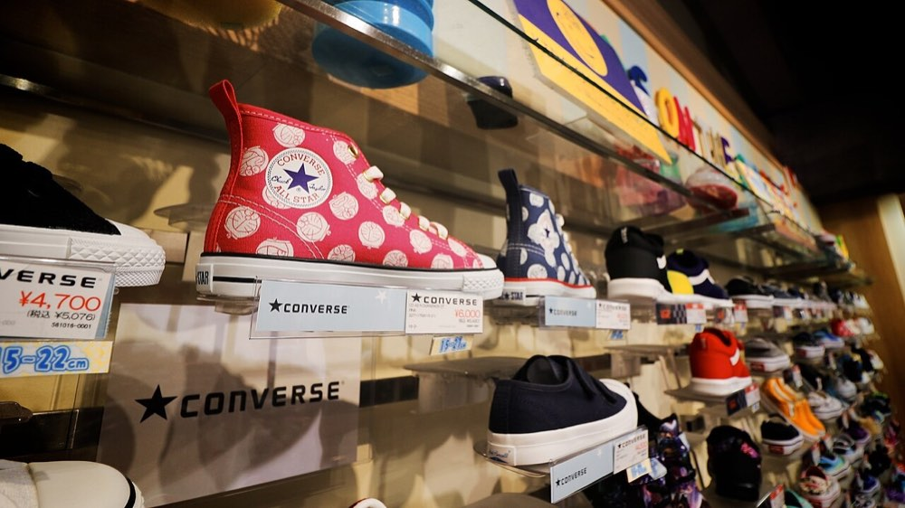

On construit la maison avant de poser les briques.
Ce qu'on s'est dit le 25 novembre, ce qu'on construit dans l'ordre, et les signes qui disent si on dérive ou si on avance.

Des Converse en rayon. Une belle photo, une vraie promo : les deux critères d'un tweet DiggeurProuver aux revendeurs qu'on est bons.
Le compte a neuf abonnés et il n'est pas relié à l'image de Damien. Personne ne nous attend. Les marques et les revendeurs ne viendront que si on leur montre des chiffres : des tweets qui prennent, des clics qui partent.
La question de fond n'est pas technique : où place-t-on le curseur entre curation et volume ? Réponse de l'appel : un maximum de curation, à grand volume. Et la curation tient en deux critères.
Il faut agir comme un compte stylé.
La pipeline dessinée par Alexi sur Figma, complétée pendant l'appel.
1. Flux produit. L'IA récupère les promos (Scrap, app Sélection). Il manque encore des sites qui comptent : Uniqlo, Jack & Jones (là où Linked fait ses meilleures stats), Muji, Decathlon.
2. Tri par le barème. L'IA note chaque pièce selon nos critères. Sur 6 000 pièces, environ 200 passent. Chantier d'Emilio, nourri du fichier marques de Damien.
3. Curation par nous. Deuxième tri, humain, dans l'app Sélection. C'est là qu'on dit oui ou non.
4. Affilié ou pas. Si le revendeur est affilié, le lien suivi se génère tout seul. Sinon on tweete quand même : au début, on arrête de penser affiliation.
5. Bouton Digger. Un bouton par produit : il va chercher les photos sur Pinterest, par le nom de la paire. L'IA qui remplace les couleurs vient en dernier recours, parce qu'elle coûte.
6. Texte du tweet. Alexi l'écrit pour l'instant. L'IA s'en chargera quand la chaîne tiendra.
7. Post sur X. Copier-coller à la main, programmé le soir, trois posts par heure. Dernier geste humain de la chaîne.
8. Mémoire des posts. Feed et Archive ne servent qu'à ça : savoir qu'un produit est passé. Signaler les doublons, jamais les bloquer : une promo peut revenir dans deux mois.
Le code d'Alexi : orange, on ne l'a pas ; jaune, on l'a mais mal ; vert, ça tient.
C'est sur les photos qu'on gagne le plus de temps. Tout le reste vient après.
Flux produit · jaune. Scrap et l'app Sélection tournent, mais des sites manquent. Damien et Emilio.
Barème · orange. En construction. Emilio.
Curation · vert. App Sélection, onglet Affiliation, lien prêt à copier. Damien.
Lien affilié · jaune. Awin automatique, Shop My Influence à la main. Damien.
Photos · orange. Deux à trois minutes par tweet à chercher sur le site marchand. Le goulot numéro un.
Texte du tweet · jaune. À la main. Alexi.
Post sur X · jaune. Copier-coller, programmation. Alexi.
Anti-doublon · orange. Rien pour l'instant.
Peu de données, mais elles disent où on en est.
Noms des concurrents tels qu'entendus dans l'appel, à vérifier sur X.
Compte X. 30 posts, 9 abonnés dont 2 inconnus. Tweets entre 4 et 8 vues ; record 173 impressions (London), 4 likes sur la casquette Carhartt, le tout premier tweet.
BBC Ice Cream. 28 clics venus d'un seul tweet, sur un compte presque sans audience. Le signe que ça peut marcher.
Temps par tweet. 2 à 3 minutes pour Alexi, 20 à 30 minutes pour dix tweets. Cible : 2 minutes maximum, puis 1 min 30 quand le bouton existera.
Les concurrents. Linked 6 600 posts et 10 à 22 k vues par tweet, Fidemol 125 000 posts, Camino 283 000. Tenhao a arrêté en 2025. On est à 30.
Dix phrases de l'appel à garder.
La maison avant les briques. Une chaîne qui marche de bout en bout, même lente, puis on améliore chaque pièce. Pas une huitième application.
Pinterest avant l'IA. Les vraies photos d'abord. La génération coûte et peut mélanger les lettres.
Produit porté, rien d'autre. Si on modifie une photo existante, un seul œil qui reconnaît le pantalon et le cadrage nous coûte toute la crédibilité. Point de Damien. On ne montre que le produit porté.
Paire d'abord, mannequin ensuite. La photo qui montre la paire en premier, l'esthétique en deuxième.
Pas de fond blanc sur X. Les photos du site ne font pas cliquer. Camino barre les prix sur l'image ; Linked dit juste « ça, à ce prix-là ».
Un lien, c'est une promesse. Pas de lien bancal : si ce n'est pas livrable en France (Chopalas), on ne le tweete pas. Les gens ne reviendraient pas.
Une icône jamais en promo. Un classique à −20 % que tout le monde connaît peut se tweeter. New Era à −30 %, non ; à −80 %, oui.
Doublon = signal, pas blocage. On marque ce qui est passé, on n'interdit pas de le reposter.
Les retours ne sont pas personnels. On itère, on reste sérieux, on avance vite : c'est notre avantage sur ceux qui ont la même idée.
Le compte suit les marques. On retire nos concurrents directs des abonnements (Camino, Linked). On garde les marques et les potes (Vetma).
On construit la maison avant de poser les briques.
Dans l'ordre, avec une date. Si on travaille sur autre chose, on dérive.
Repère simple : si Alexi passe plus de trois minutes par tweet, ou si on parle d'affiliation avant d'avoir des likes, on s'est perdus.
1. 25 novembre, soir (Paris). Salve test : Alexi programme trois posts par heure avec de vraies promos et de vraies photos (Converse à 25 €, Campus, Firebird, Pharrell). Damien et Emilio envoient une sélection de 19 paires.
2. 26 novembre, matin. Premier verdict au réveil : un tweet à 10 ou 15 likes de gens qu'on ne connaît pas, c'est le signe. Zéro différence : on revoit les photos avant de revoir le volume.
3. Cette semaine. Emilio : le barème et le filtre à la source (plus de sites). Damien : le fichier marques pour le barème, les sélections. Alexi : abonnements nettoyés, tweets, texte à la main.
4. Semaine du 1er décembre. Le bouton Digger : Pinterest automatique, photos prêtes sans ouvrir le site marchand. Une zone « tweet prêt » (photos et texte) après « liens générés ». Un dossier partagé sur le NAS (6 To) pour les visuels.
5. Ensuite. Génération IA avec une bibliothèque de photos de référence (remplacer les couleurs). Texte du tweet par l'IA. Publication automatique, liens Diggeur posés seuls comme chez Linked.
6. Quand on aura une audience. Seulement là : affiliation partout, mails aux revendeurs avec les stats, sélections à la Linked (les classiques Carhartt en photos Pinterest). Pas avant.
New Era passe une casquette à −30 %. On la tweete ?
CONVERSE 2016 — MIKI Yoshihito — CC BY 2.0 (Wikimedia Commons)